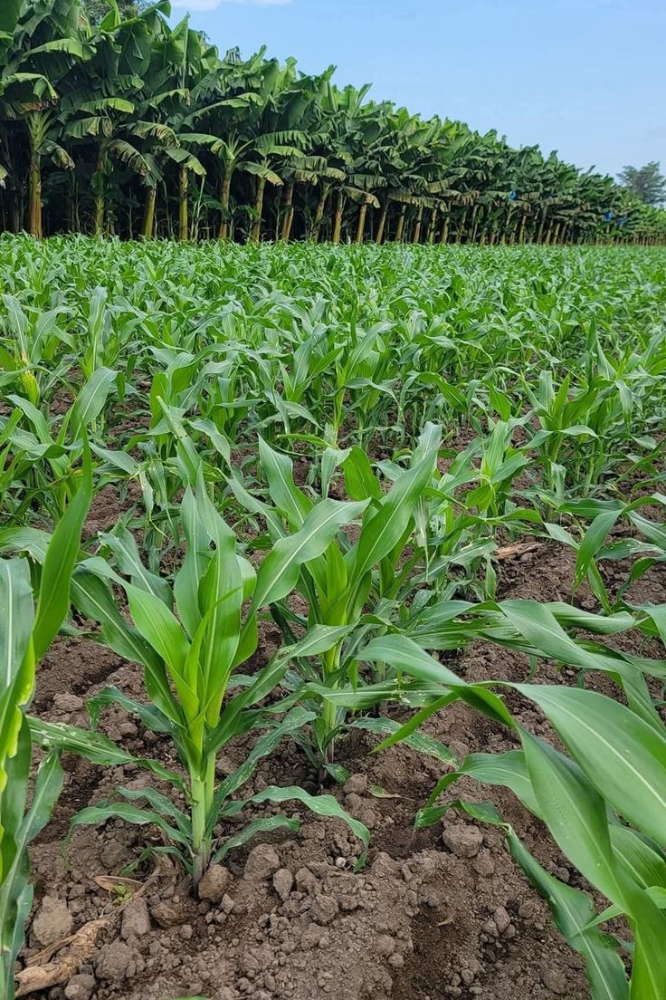
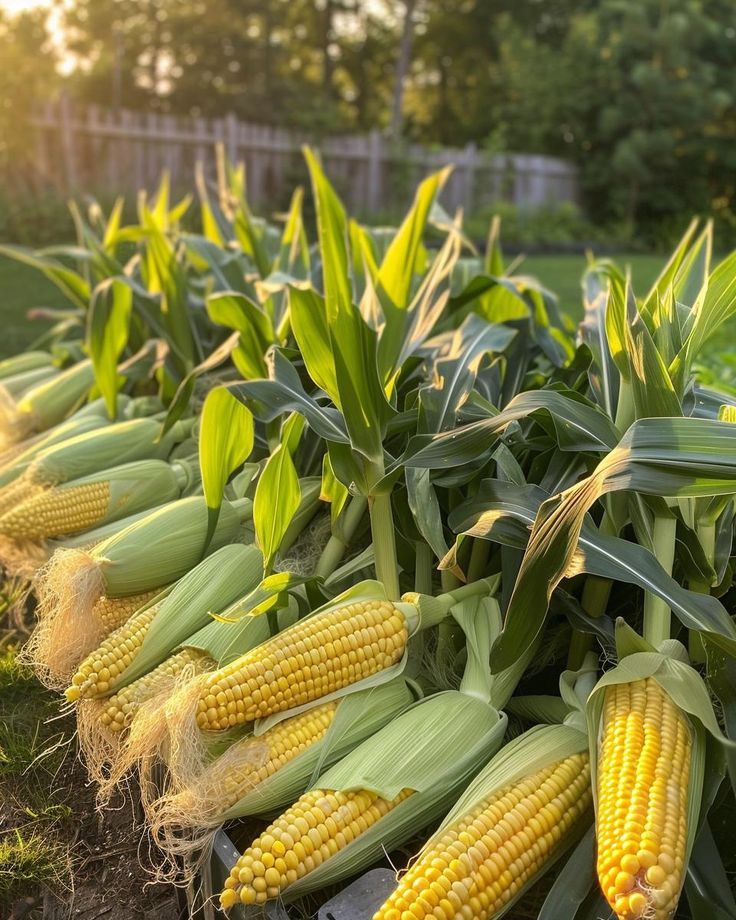
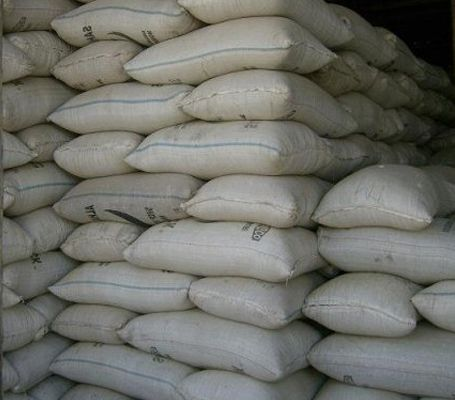
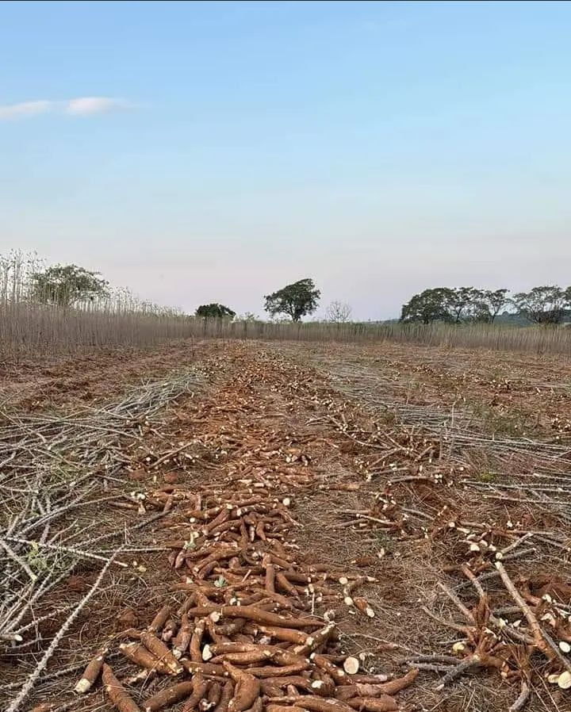
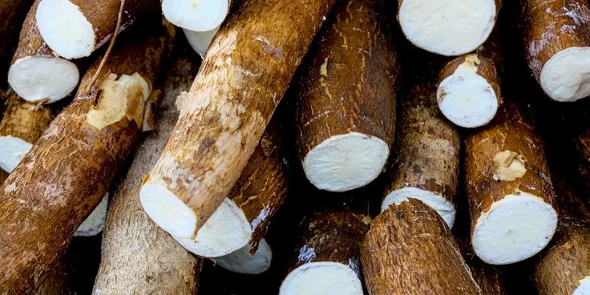
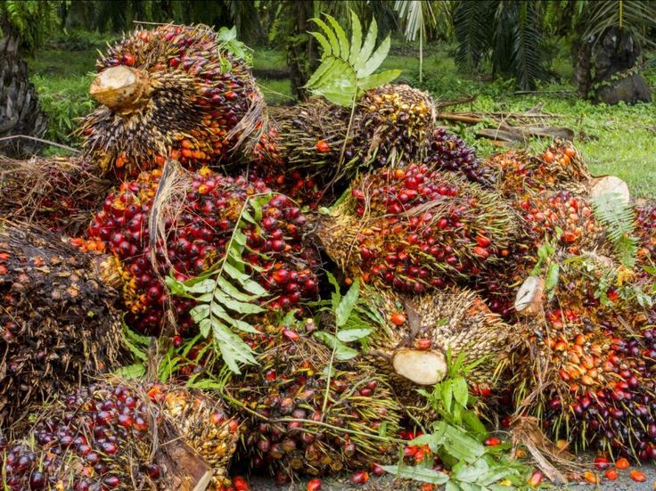
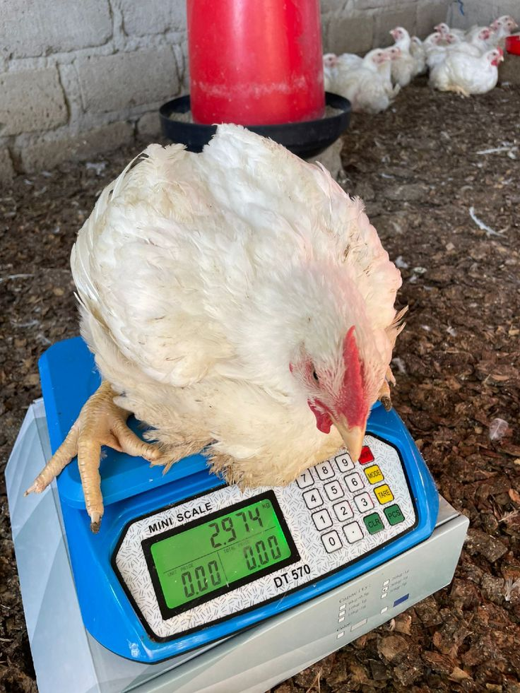
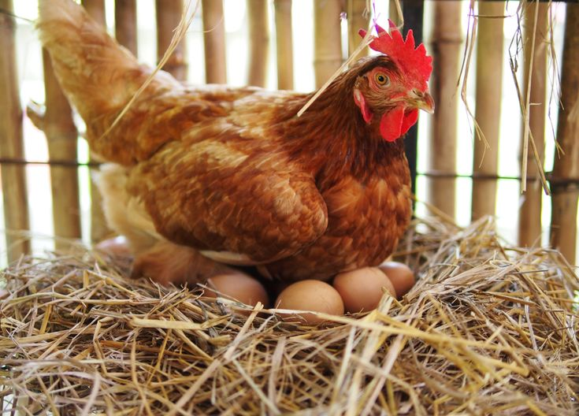
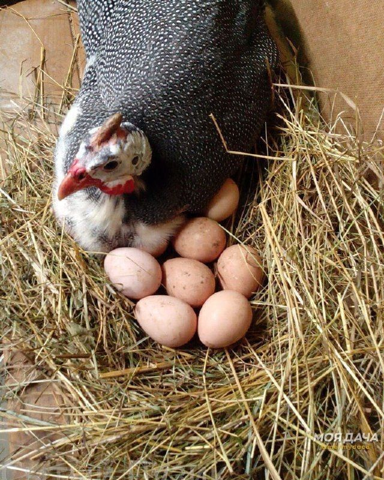

C.C.A.N Ferme Monseigneur
C.C.A.N Ferme Monseigneur
C.C.A.N Ferme Monseigneur
C.C.A.N Ferme Monseigneur




Le maïs produit par la ferme C.C.A.N est cultivé avec des méthodes agricoles durables. Il constitue une source importante d’alimentation pour les ménages et pour l’alimentation animale.



La ferme produit du manioc de qualité destiné à la consommation locale et à la transformation en farine ou en chikwangue. Cette culture constitue une base importante de l’alimentation.



Notre huile-de-palme est produite à partir de palmiers cultivés localement. Elle est utilisée pour la cuisine et pour la transformation alimentaire.



La ferme élève des poules dans un environnement sain afin de produire des œufs frais et nutritifs pour la consommation locale.



La ferme développe également l’élevage de cailles qui produisent des œufs très nutritifs et appréciés pour leurs qualités alimentaires.